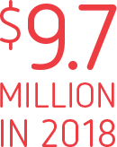
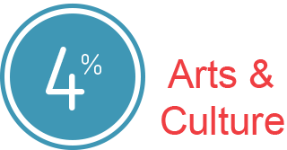
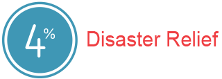
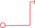
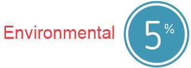
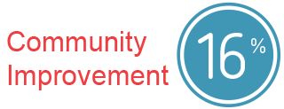
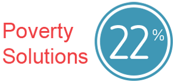

The arts and culture have the power to bring us together through shared experiences. We're proud to support initiatives that encourage creativity, feed imaginations and color our world.
Helping our communities return to normalcy following a disaster is important to us. We not only work to keep the lights on and the gas flowing but also offer a helping hand in times of need.
Louisiana is our home too, so we're reducing emissions and delivering cleaner, more efficient power. And whether it's donating supplies to build artificial reefs for marine life or supporting beautification and cleanup efforts, we're dedicated to being good stewards of the environment.
We go beyond the power grid to support the communities we serve. From improving public safety to supporting local youth organizations, we're an active participant in making Louisiana a better place to live and work.
Giving back and volunteerism are at the cornerstone of our mission. By volunteering at local food pantries and supporting emergency bill assistance programs like The Power to Care, we help improve quality of life in our communities. It's part of who we are and have always been.
Education and workforce development are critical in building and maintaining vibrant, healthy and sustainable communities. From partnering with nonprofits to investing in schools and universities, we're committed to creating opportunities for all Louisianans.